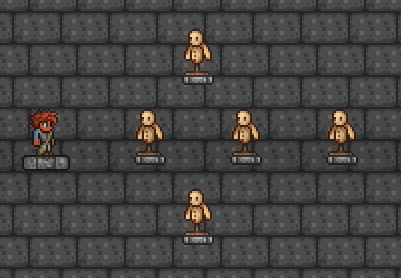
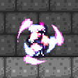

Classe baseada no uso de armas de mana, com uma variedade de armas de suporte e dps, baseada completamente no uso de mana.
Arma dropada pelo MoonLord, um prisma que ao segurar começa a formar um laser que ao se completar faz um laser poderoso dando muito dano.

Armadura craftada com luminita e fragmento de Nebula do pilar de nebula e possui um efeito onde ao atacar spawna partículas que podem ser coletadas para receber buffs como dano mágico, regeneração de mana, e regeneração de vida.
